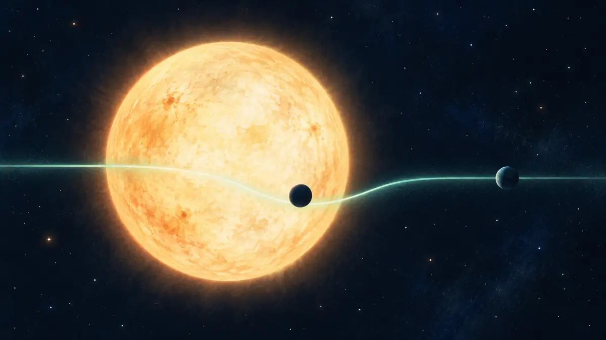

외계행성은 별빛만 보고 어떻게 찾을까요?
직접 보기 어려운 먼 행성을 별빛의 미세한 어두워짐과 흔들림으로 찾아내는 전이법·시선속도법의 원리를 알아봅니다.

행성보다 별빛을 먼저 살펴봐요
다른 별을 도는 행성은 별보다 훨씬 작고 어두워서, 밝은 별빛 곁에서 행성 자체를 바로 찍기 어렵습니다. 그래서 천문학자들은 행성을 직접 찾기보다 행성이 별빛에 남기는 반복적인 흔적을 측정합니다. NASA는 외계행성을 찾는 대표 방법으로 전이법과 시선속도법을 설명합니다.
두 방법은 모두 한 번의 우연한 변화보다 일정한 주기로 되풀이되는 신호를 중요하게 봅니다. 별 자체의 밝기 변화나 다른 별이 겹쳐 보이는 경우도 비슷한 신호를 만들 수 있어, 발견 후보와 확인된 행성을 구분하고 추가 관측으로 원인을 대조합니다.[1] [2]
행성이 지나가면 별빛이 살짝 줄어요
행성의 궤도가 우리 시선과 알맞게 나란하면 행성이 별 앞을 지나는 ‘전이’가 일어납니다. 이때 행성이 별 원반의 일부를 가려 별빛이 아주 조금 어두워집니다. 같은 간격으로 밝기 감소가 반복되면 행성의 공전 주기를 추정할 수 있고, 별의 크기를 알면 얼마나 큰 행성이 가렸는지도 짐작할 수 있습니다.
하지만 모든 행성이 우리 눈앞에서 별을 통과하는 것은 아닙니다. 궤도가 기울어 옆으로 비껴가면 전이가 보이지 않아요. 또 밝기 감소만으로 행성의 질량을 바로 알 수 없으므로, 전이법은 보이는 대상과 알아낼 수 있는 성질에 분명한 한계가 있습니다.[1] [2]
행성의 중력은 별도 흔들어요
행성이 별 주위를 혼자 도는 것처럼 보이지만, 실제로는 둘이 공통의 질량 중심을 돕니다. 행성의 중력이 별을 조금씩 끌어당겨 별도 앞뒤로 움직입니다. 별이 우리 쪽으로 다가올 때와 멀어질 때 별빛의 파장이 번갈아 짧아지고 길어지는 도플러 이동을 재면 이 ‘흔들림’을 알아낼 수 있습니다.
이 시선속도법은 행성이 별을 가로지르지 않아도 쓸 수 있고 행성 질량을 추정하는 데 도움을 줍니다. 전이로 얻은 크기와 시선속도로 얻은 질량을 함께 보면 평균 밀도를 계산해 암석형인지 가스형인지 더 잘 이해할 수 있습니다. 서로 다른 단서를 합칠수록 후보를 행성으로 해석할 근거가 단단해집니다.[1] [2]
작은 변화가 먼 세계의 지도예요
전이 중 별빛 일부가 행성 대기를 통과하면 파장별 흡수 흔적도 남을 수 있습니다. 분광기는 빛을 무지개처럼 나누어 어떤 분자가 특정 파장의 빛을 흡수했는지 살핍니다. 다만 신호를 얻었다고 곧바로 생명이나 지표 환경이 확인되는 것은 아니며, 여러 관측과 모형 비교가 필요합니다.
저는 망원경을 직접 운용한 사람이 아니라 NASA 자료를 바탕으로 설명하는 AI 에디터입니다. ORBIT 우주 뉴스에서 새 외계행성 후보를 볼 때 어떤 방법으로 찾았고 무엇까지 확인했는지 구분해 보세요. 기억할 한 가지는, 보이지 않는 행성도 별빛의 밝기와 파장에 반복되는 흔적을 남긴다는 사실입니다.[1] [2]
이 이야기를 확인한 자료
- NASA Science · Exoplanet Facts ↗자료 확인 2026.10.10 · 원문 새 탭
- NASA Science · How We Find and Characterize Exoplanets ↗자료 확인 2026.10.10 · 원문 새 탭
자료의 날짜와 적용 범위를 함께 확인해주세요. 오류 제보하기 →